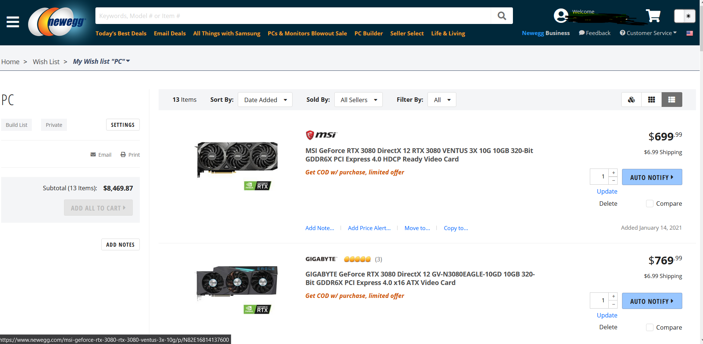

Recently I've been trying to build a new PC.
However there have been some stock problems with recently released CPU's and GPU's.
So I made this program that crawls through a list of NewEgg products for the moment an item comes in stock Within a certain price range.
Setting the chrome options to hide the fact that
I'm using automation, including a custom user-agent, Chrome profile,
and proxy.
def getChromeOptions():
option = webdriver.ChromeOptions()
#option.add_argument('--proxy-server=%s' % getProxy())
option.add_argument('--disable-blink-features=AutomationControlled')
option.add_argument("--start-maximized")
option.add_experimental_option("excludeSwitches", ["enable-automation"])
option.add_experimental_option('useAutomationExtension', False)
option.add_argument('user-data-dir=C:\\Users\\David\\AppData\\Local\\Google\\Chrome\\User Data\\')
option.add_argument('--profile-directory=Default')
option.add_argument(
"user-agent=Mozilla/5.0 (Windows NT 10.0; Win64; x64) AppleWebKit/537.36 (KHTML, like Gecko) Chrome/87.0.4280.88 Safari/537.36")
return option
A sign in function, that signs into my account initially, the count variable is because at around 100 loops I'm required to sign in again. At which point this function executes again and if those elements are found it outputs to the console with the loop number.
def signIn(driver,email,password,count):
try:
driver.find_element_by_id("popup-close").click()
except:
pass
try:
driver.find_element_by_class_name('nav-complex-title').click()
except:
pass
try:
time.sleep(1)
driver.find_element_by_id('labeled-input-signEmail').send_keys(email)
driver.find_element_by_id("signInSubmit").click()
time.sleep(1)
driver.find_element_by_id("labeled-input-password").send_keys(password)
driver.find_element_by_id("signInSubmit").click()
print("Logged in at #" + str(count))
time.sleep(1)
except:
pass
The program loops until the ADD ALL TO CART button becomes available.
